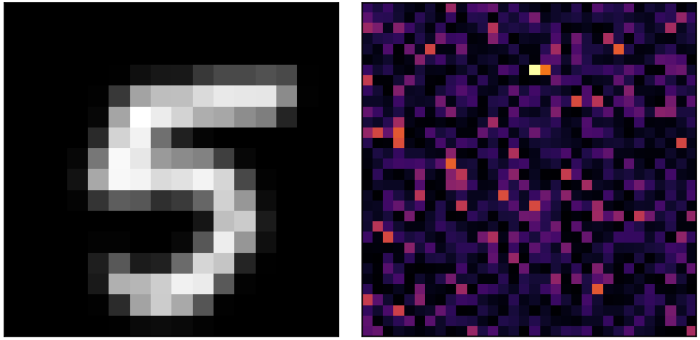

Classification & Reconstruction Through Scattering Media with Deep Neural Networks
Duke University | Advised by Dr. Roarke Horstmeyer

When coherent laser light scatters through a disordered medium, it produces a speckle pattern—an apparently random interference image that nevertheless encodes rich information about the original scene. This project investigates whether deep neural networks can decode that hidden information for two distinct tasks: digit classification and image reconstruction. Using the Rice DSP Real Transmission Matrix Dataset across three scattering media (AmpSLM 16×16, PhaseSLM 40×40, and AmpSLM 64×64), we model the physical forward process as a complex transmission matrix and train both a CNN classifier and a U-Net reconstructor on the resulting intensity patterns. Classification achieves ~95% accuracy even at realistic noise levels (SNR 20 dB), while U-Net reconstruction yields PSNR ≈ 25.5 dB / SSIM ≈ 0.88. Critically, we find that neither approach generalizes across transmission matrices. Each scattering medium defines a unique forward mapping, and changing the medium collapses performance to near chance. These results confirm that speckle is not random noise but structured, learnable information, while also revealing the fundamental challenge of medium-specific training in practical sensing systems.